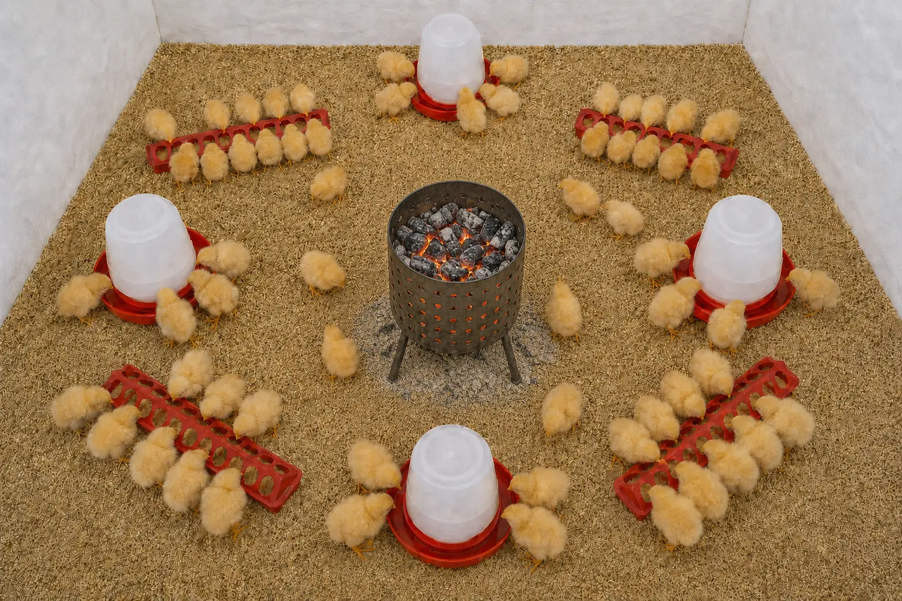
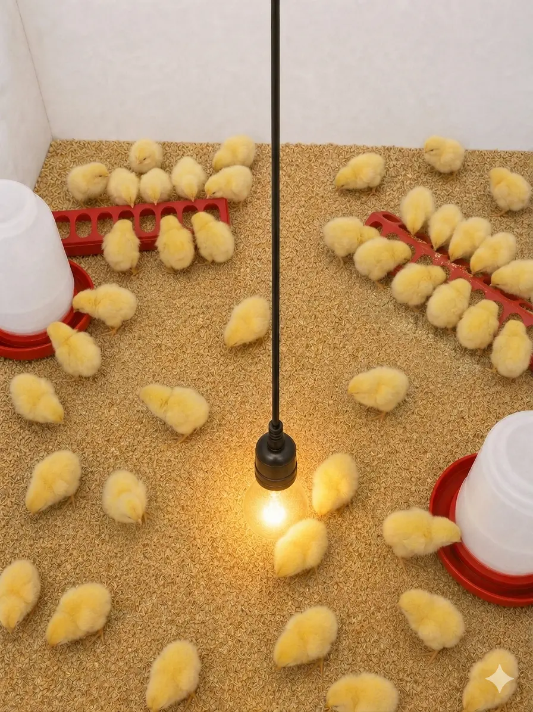
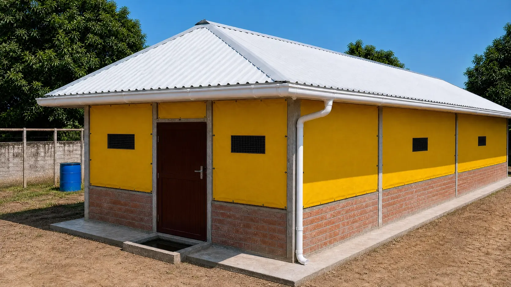
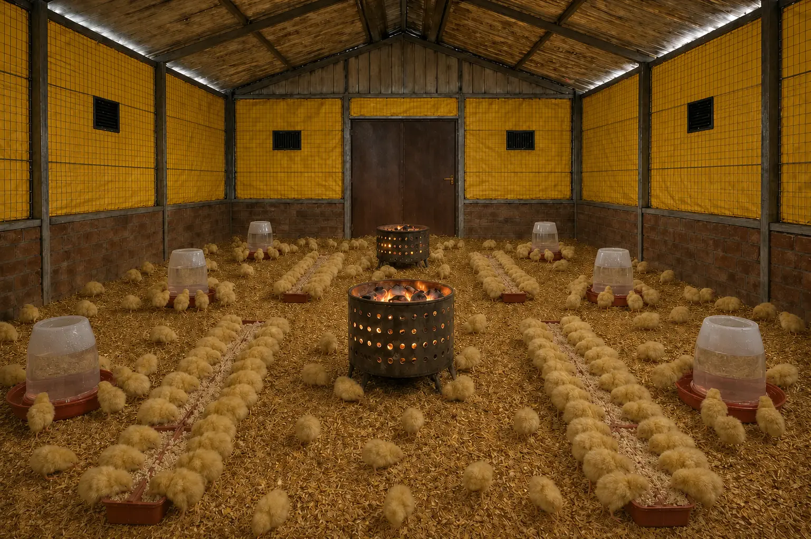
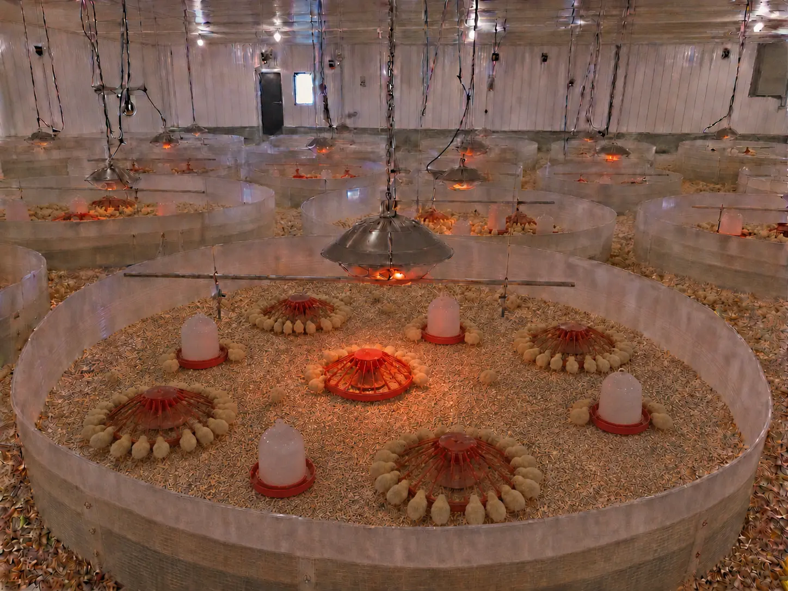

Broiler Brooding: A Practical Guide
What Brooding Entails
Brooding is the critical period—typically the first 14 days—during which young chicks are provided with supplementary heat and a controlled environment. Because day-old chicks are fragile and cannot yet regulate their own body temperature, they rely entirely on the farmer to provide the warmth their mother would naturally offer. Proper management during this stage is essential; failure to maintain the correct environment can lead to high mortality and poor flock performance.
Successful brooding requires a balance of four key factors: Optimum temperature, appropriate lighting, adequate nutrition, and strict biosecurity. During the first two weeks, it is recommended to feed birds ad libitum (free access to feed at all times) to support their rapid initial growth. Additionally, the use of a foot dip at the entrance of the house should be strictly enforced to prevent the introduction of pathogens.
Temperature and Heat Management
Maintaining a consistent environmental temperature is the most vital task during brooding. Common heat sources include 200-watt incandescent bulbs, charcoal pots, or large kerosene lanterns. While supplementary heat is often needed 24 hours a day for the first 14 days, you must always adjust based on the birds' behaviour and the ambient weather. If the afternoon is exceptionally hot, adjust the heat source appropriately to prevent heat stress.
Important Safety Note
charcoal pots and kerosene lanterns consume oxygen and release carbon monoxide. Never use these in a completely sealed room. Ensure there is always a source of fresh air to prevent carbon monoxide buildup, and keep all fuel-burning equipment safely away from flammable litter, tarpaulins, or curtains.
Reading Chick Behaviour
The best thermometer is the behaviour of the birds themselves. Observe their distribution in the pen to determine if the temperature is correct:
- Clustering: If chicks crowd tightly around the heat source, they are cold. You may need to add more charcoal or lower your heat lamps.
- Distancing: If chicks move to the far edges of the pen and away from the heat, they are too hot. Adjust by removing charcoal or raising the bulbs.
- Even Distribution: If chicks are spread out evenly, feeding, and drinking comfortably, the temperature is ideal.


Managing Heat Sources
When using a charcoal pot, some varieties of charcoal (such as those from bakeries) can be difficult to ignite. A useful technique is to roast a small batch of charcoal, say 15 pieces, in an open fire until glowing red, then mix it into the pot and fan it to ignite the rest. If using 200-watt incandescent bulbs, lower them close to the birds but keep them easy to raise if the heat becomes excessive. Kerosene lanterns are useful as a backup or in very small pens, though they provide less heat than charcoal or electric sources.
The Brooding House
The brooding house is the specialized environment where chicks remain until they are ready for the rearing pen. The structure should be designed to minimize drafts while still allowing for essential air exchange. Many farmers use tarpaulins to cover the mesh walls of a standard poultry house during the first two weeks, effectively converting it into a warm brooding space that can be easily opened up later as the birds grow.


For the first three days, cover litter materials like sawdust with clean paper or cartons. This prevents the chicks from instinctively pecking at and consuming the litter before they have learned to identify their feed. In larger operations with high bird populations, use brooder guards to group chicks around individual heat sources, ensuring every bird has access to the warmth it needs.
